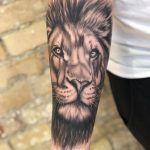
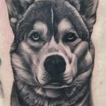

Estilos y trabajos
Realismo y color
Retratos, naturaleza y composiciones con detalle y volumen.
Línea fina
Trazos delicados y diseños minimalistas personalizados.
Blackwork y tradicional
Contrastes, geometría y diseños de inspiración clásica.
Lettering y reformas
Frases, nombres y valoración de tatuajes para renovar o cubrir.



El presupuesto depende del tamaño, el detalle y el tiempo necesario. Cuéntanos tu idea para valorar el proyecto.
Ver más trabajos